This is a mid-term project of WRT235 Writing in Electronic Environments course when I was an exchange student in the University of Rhode Island, U.S.
INTRODUCTION
Typing Chinese characters is an essential skill for students who are learning Chinese as a second language. The following tutorial will illustrate how to type Chinese characters into Google Docs without changing any settings of your computer or your Google account.
Note: Basic knowledge of Chinese, especially Chinese pronunciation symbols, "pinyin", is required in this tutorial.
MATERIALS
A Computer with Internet Connection to Google Docs (No special settings needed)
Open your browser and go to https://docs.google.com. If you haven't sign in, please sign in your google account. You will see a webpage like Figure 1.
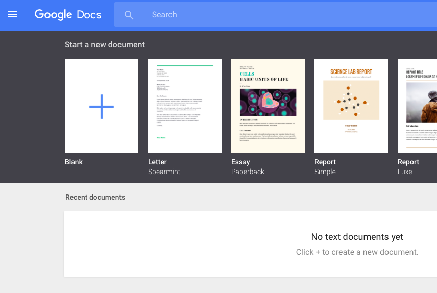
Figure 1. Go to Google Docs
Click on the big blue "+" button to start a new blank document, as illustrated in Figure 2.
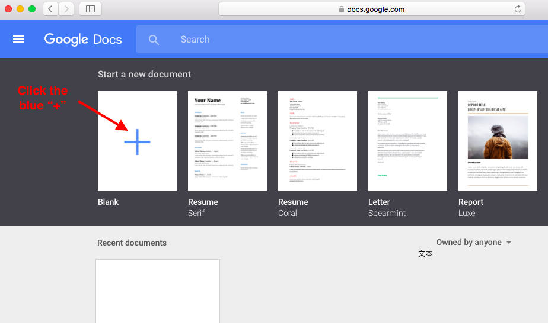
Figure 2. Start a New Blank Document
To change the input language, you need to select File > Language > "中文（中国）". See Figure 3 if you can't find the language "中文（中国）".
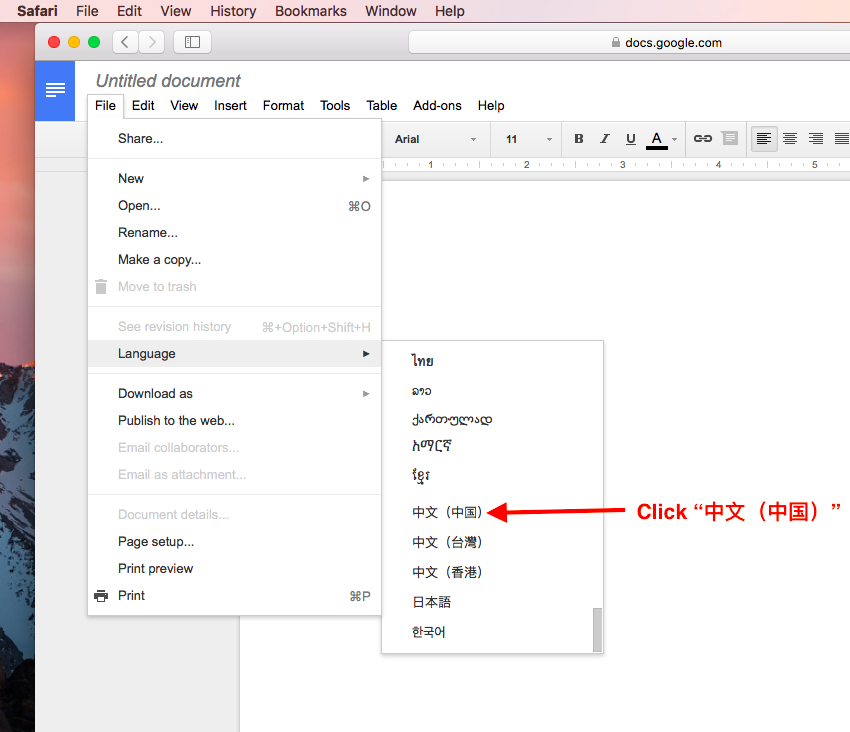
Figure 3. Change Language
To select Chinese input method, click the pencil logo button(it may not show as a pencil logo on your computer but it works the same) on right end of the tool bar. If you see a menu pops up, you click the right button! Then you choose "拼音" in the menu. See Figure 4 if you can't find the button.
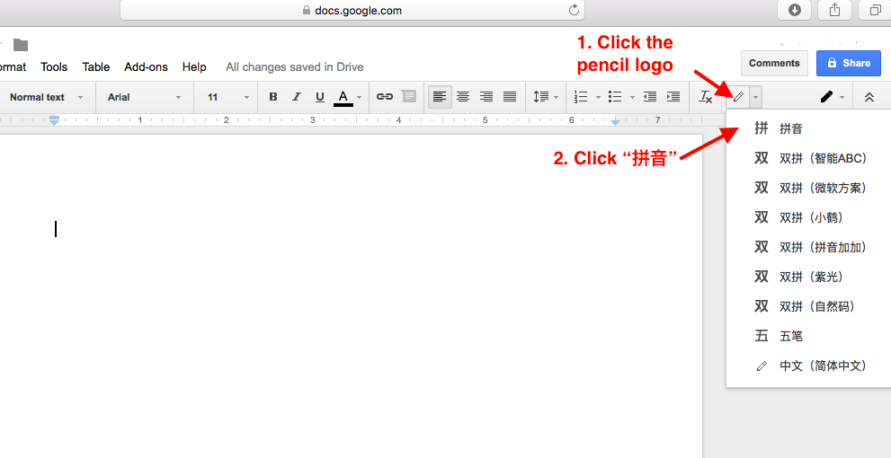
Figure 4. Select Chinese Input Method
Type in the pronunciation markup of the Chinese characters you want. For example, you want to type 你好, you just type its pronunciation markup, nihao. After you type in the pronunciation markup, there will be a few characters to choose from, just as shown in Figure 5 ("你好" means hello)
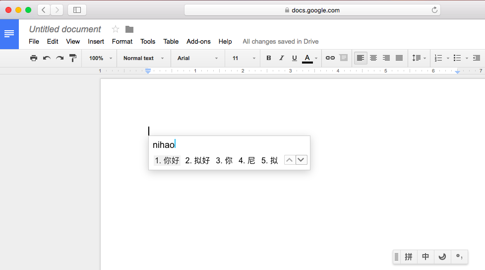
Figure 5. Type in Pronunciation Markup
Ignore this step in our example of typing "你好". However, when you are typing other Chinese characters and the character you want is not listed, you can click "V" button to see more choices, just as shown in Figure 6 and 7.
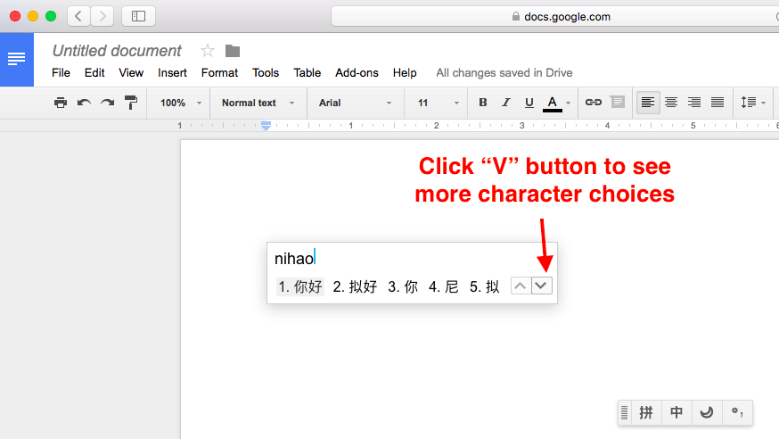
Figure 6. See More Choices
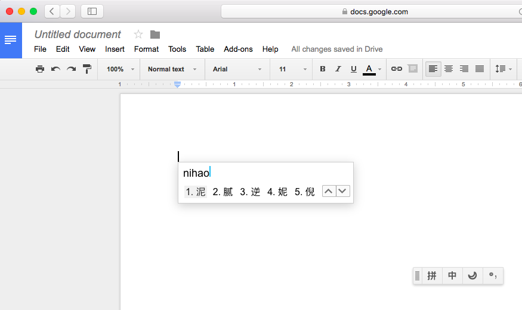
Figure 7. More Choices
Just type the number before the character you want to select. In our example of "你好", the character we want is listed as the first choice, so type 1 shown before characters 你好, then you will see "你好" typed into the document, as shown in Figure 8
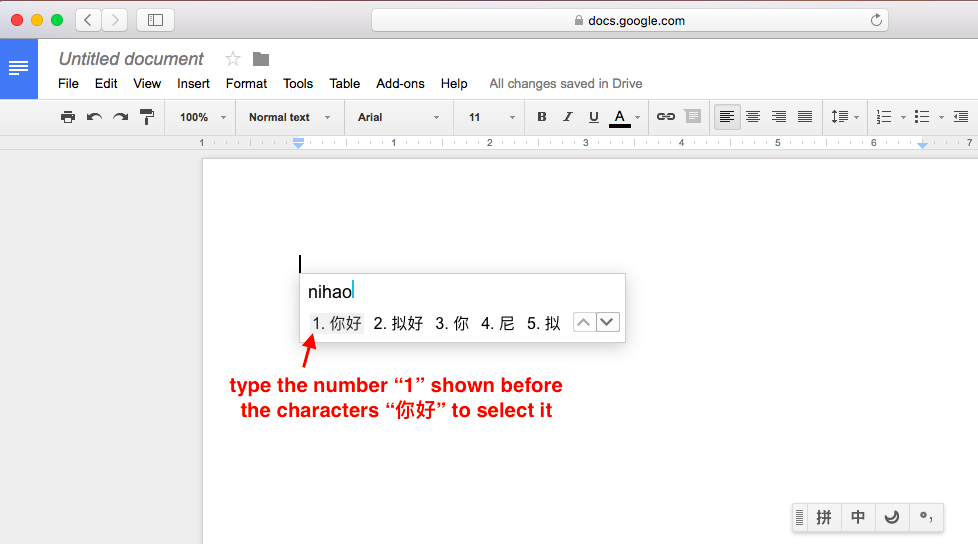
Figure 8. Select Characters
When you are typing a long Chinese essay, you may occasionally need to type a few English words or English abbreviations in the essay.
To switch to English input mode, click the "中" button on the input method bar(it may appear at the lower right corner of your screen). See Figure 9 if you can't find "中" button. After you click "中" button, the "中" button will change into "En" button, which means you are in English input mode, just as shown in Figure 10.
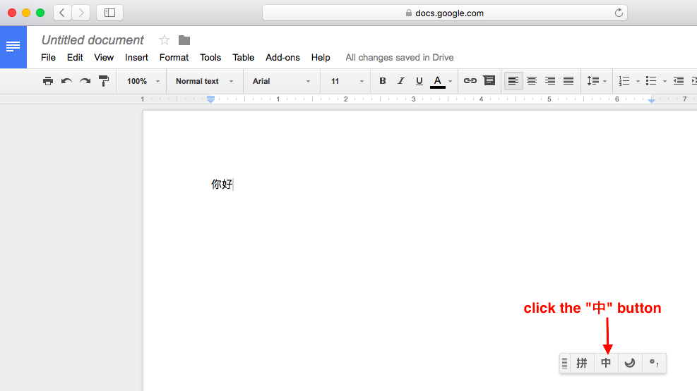
Figure 9. Switch to English Input Mode
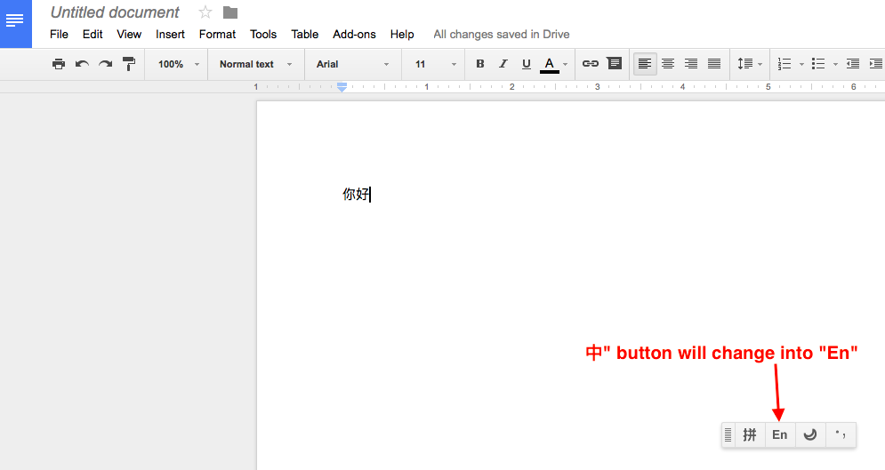
Figure 10. Now in English Input Mode
Type in English as you normally do. For example, type "hello", as shown in Figure 11.
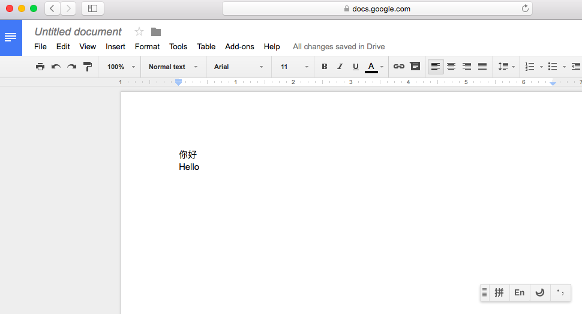
Figure 11. Type in English
Click "En" button on the input method bar to switch back to Chinese input mode, just as shown in Figure 12.
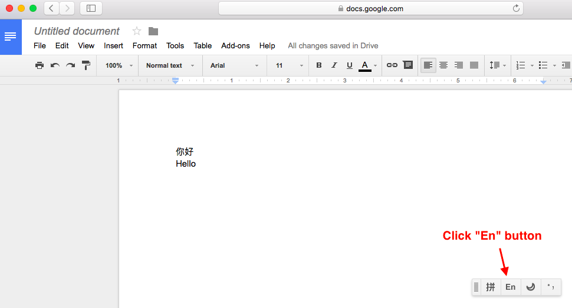
Figure 12. Switch back to Chinese Input Mode
CONCLUSION
By following the steps above, you will be able to type Chinese characters and Chinese mixed with English words into Google Docs.